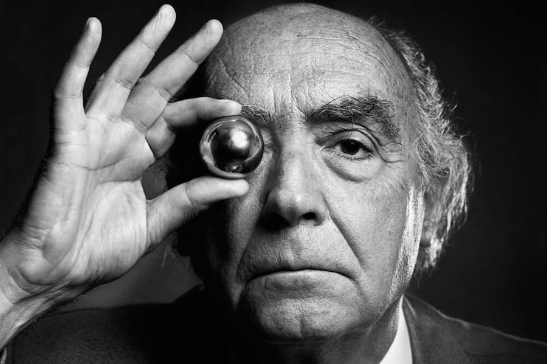

José de Sousa Saramago foi um escritor português. Saramago foi considerado o responsável pelo efetivo reconhecimento internacional da prosa em língua portuguesa.

"Gostar é provavelmente a melhor maneira de ter, ter deve ser a pior maneira de gostar." "Não tenhamos pressa, mas não percamos tempo." "Se tens um coração de ferro, bom proveito. O meu, fizeram-no de carne, e sangra todo dia." "Fisicamente, habitamos um espaço, mas, sentimentalmente, somos habitados por uma memória." "O espelho e os sonhos são coisas semelhantes, é como a imagem do homem diante de si próprio." "Mesmo que a rota da minha vida me conduza a uma estrela, nem por isso fui dispensado de percorrer os caminhos do mundo." "A única maneira de liquidar o dragão é cortar-lhe a cabeça, aparar-lhe as unhas não serve de nada."